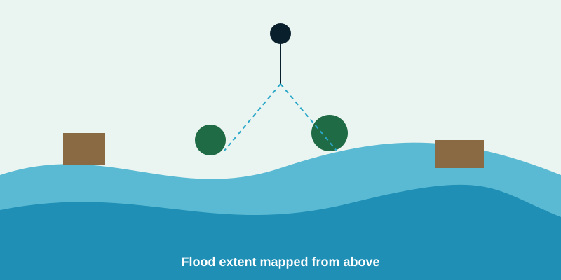
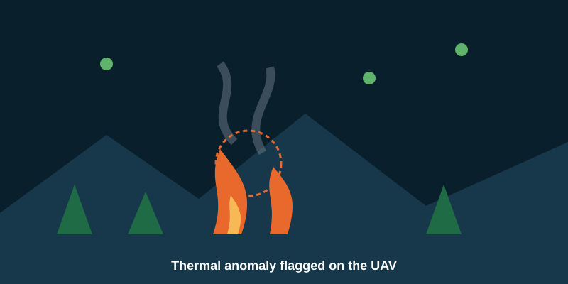

Computer vision
Deep models for smoke, fire, floodwater, damaged vegetation and land-cover change, optimised for constrained edge hardware.
Seven objectives, six environmental domains, and a clear way to measure progress.


Deep models for smoke, fire, floodwater, damaged vegetation and land-cover change, optimised for constrained edge hardware.
RGB, thermal, environmental sensors and geographic information combine into one environmental state estimate.
Each UAV weighs location, energy, priority, risk, neighbours and connectivity to maximise coverage and information quality while minimising energy, communication cost and time.
Normal state, anomaly, hazard classification, risk assessment, alert: the chain that makes early detection possible.
Numerical targets are set after use cases, sensors, UAV platform and baselines are fixed, rather than assumed at proposal stage.